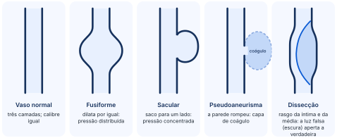
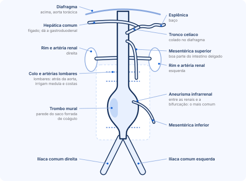
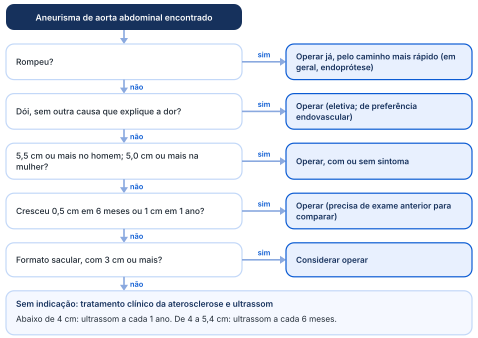
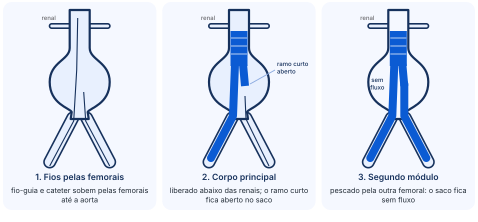

Pesa mais o risco de romper
Opera, mesmo que a artéria seja tortuosa e difícil de alcançar.
Quando uma artéria dilatada deve ser tratada: a balança entre o risco de romper e o risco do procedimento, das artérias do abdome até a aorta.
Material de estudo da aula de 21 de outubro de 2026, organizado por temas e em linguagem simples. A legenda de cores está na página 2.
“Não vem para a cabeça aquilo que vocês não passaram ou repassaram.”
Aneurisma é um trecho de artéria que se alargou de vez e ficou pelo menos uma vez e meia mais largo do que deveria. A parede (inteira ou rompida) e o formato dizem quanto ele ameaça romper, e é isso que decide entre operar e acompanhar.
Aneurisma é uma dilatação localizada e permanente de uma artéria, que passa de pelo menos 50% do diâmetro normal do vaso: o trecho fica uma vez e meia ou mais do tamanho. É a primeira coisa a entender, e vale para todos os aneurismas, das pequenas artérias do abdome até a aorta.
Dilatação localizada de pelo menos metade do diâmetro normal. Na aorta, diâmetro acima de 3 cm.
Aorta toda com 4 cm, do começo ao fim, não é aneurisma: é arteriomegalia. Aneurisma é o trecho localizado que destoa do resto da artéria.
Na síndrome de Marfan, uma doença do colágeno, a aorta muitas vezes não tem um segmento dilatado: é gigante desde a válvula aórtica até embaixo. O paciente costuma operar a válvula aórtica antes dos 20 anos e receber um tubo na aorta, e o resto continua dilatando. Aos 26 anos, muitos já quase não têm o que fazer: seria preciso trocar a aorta inteira e reimplantar cada ramo, e outros vasos começam a dilatar.
“Existem doenças que são incompatíveis com a vida. Infelizmente, muita coisa não tem o que mudar.”
A parede da artéria tem três camadas: a íntima (o endotélio, por dentro), a média (muscular) e a adventícia (a mais externa). No aneurisma verdadeiro, as três dilatam juntas: a parede “laceou”. No falso aneurisma, ou pseudoaneurisma, a artéria já rompeu: o sangue vazou, empurrou a gordura ou o subcutâneo em volta e formou um hematoma que segura o sangue como uma capa falsa.
“Se cair na prova que é pseudoaneurisma, eles não têm todas as camadas da artéria.”
Quanto ao formato, o aneurisma verdadeiro pode ser fusiforme, sacular ou por dissecção. O formato muda a forma como a pressão empurra a parede.

As artérias que saem da aorta para o intestino, o baço, o fígado e os rins também fazem aneurisma. Algumas rompem com qualquer tamanho e matam: são tratadas sempre. Outras quase nunca rompem enquanto pequenas, e operar cedo seria mais arriscado do que esperar.
O aneurisma cerebral fica com a neurologia e a neurocirurgia (o neurointervencionista) e não entra aqui. Os aneurismas viscerais parecem todos iguais, mas cada artéria tem seu comportamento, e as regras de quando tratar vieram de ciência, testes e observação.
Dá para tratar aneurisma de qualquer tamanho em qualquer lugar, mas não é adequado tratar sem fundamento.
Opera, mesmo que a artéria seja tortuosa e difícil de alcançar.
Mantém sem operar e acompanha.
Foi assim que se chegou aos cortes de tamanho: na artéria esplênica, acima de 3 cm praticamente todos rompiam; abaixo disso, quase nunca. “Quase” não quer dizer que não rompe, mas abaixo do corte o procedimento é que pesa mais. O mesmo raciocínio deu os 2 cm do tronco celíaco e os 3 cm da artéria renal.
Mesentérica superior, pancreatoduodenal, gastroduodenal e cólica são artérias de muito fluxo. Quando rompem, até se descobrir o que era, o abdome já inundou de sangue, e geralmente não há o que fazer.
Aneurisma visceral costuma crescer menos de 1 mm por ano. Crescer 5 mm ou mais por ano é muito rápido e indica tratar.
“Não se esqueçam dessa figura, porque algumas coisas são emblemáticas. A artéria esplênica é muito clássica (…). E a artéria mesentérica superior também, porque todos têm que ser tratados.”
A artéria esplênica quase nunca rompe, com uma exceção estranha: o aneurisma descompensa no trabalho de parto. Por isso, na mulher em idade fértil (que ainda menstrua e pode engravidar), o aneurisma de esplênica encontrado é tratado com qualquer tamanho, mesmo uma bolinha sacular de 0,5 cm. Já no homem com 2,5 cm, ainda não precisa operar; no idoso de 80 anos, homem ou mulher, também não.
Uma gestante chegou ao Hospital Universitário com dor abrupta e foi levada para a sala de parto. Não era trabalho de parto: era abdome agudo. Na cirurgia, a cavidade estava cheia de sangue, e o sangramento não vinha de baixo: era um aneurisma roto da artéria esplênica, numa mulher de uns 25 anos. A ginecologia chamou a cirurgia geral, que fez a esplenectomia e a hemostasia, e a mãe e o bebê sobreviveram. Na mesma semana chegou outra gestante com dor parecida, à esquerda, com peritonite e nada que lembrasse trabalho de parto. O ginecologista suspeitou na hora: era o mesmo quadro.
É raro, e coisas raras às vezes vêm em dupla. Como não é o dia a dia de ninguém, quem não pensa nessa possibilidade dificilmente faz o diagnóstico. E operar no meio da gestação é péssimo: por isso o aneurisma é tratado antes.
“Se está na idade fértil, que vai entrar em trabalho de parto possivelmente no futuro, tem que operar.”
Um dos sintomas do aneurisma de artéria renal é a hipertensão arterial refratária. Tudo o que reduz o fluxo para o rim e deixa o parênquima renal em isquemia acaba subindo a pressão:
Imagine alguém preso num quartinho, sem comida. Ele grita na porta: “estou com fome!”, e alguém traz comida. Se a comida vem direito, ele grita menos; se começa a faltar, volta a gritar. O rim não sabe que a pressão do paciente já está alta: ele só sabe que falta sangue, e manda subir a pressão para que o sangue chegue.
A aterosclerose e a displasia fibromuscular (vistas mais adiante na disciplina) estreitam a artéria renal. A displasia fibromuscular, que é uma fibrose, faz estenoses e também aneurismas na renal; juntos, derrubam o fluxo, causam isquemia renal e sobem a pressão. Por isso, em homem ou mulher, trata-se o aneurisma renal com pressão difícil de controlar (dor na nuca, idas ao pronto-socorro com cefaleia), o acima de 3 cm e o que vem junto com estenose ou hipertensão. E, como na esplênica, o de qualquer tamanho na mulher em idade fértil, porque também rompe com mais facilidade no trabalho de parto.
O critério “sintomático” é vago: aneurisma de artéria jejunal ou hepática não dá uma dor típica (“doutor, estou com dor no fígado” não é bem isso). O abdome é uma caixinha de surpresa: a dor pode ser menstrual, cólica renal, apendicite, pancreatite, gastrite, divertículo inflamado ou, o mais comum, intoxicação alimentar.
“Sintomático” não é uma dor característica do aneurisma: é diagnóstico por exclusão. Investiga tudo; se descartou as outras causas e só sobrou o aneurisma, trata o aneurisma, mesmo que a clínica pareça não bater.
Dá para tratar abrindo a barriga, amarrando a artéria ou fazendo uma ponte, ou por dentro do vaso, com um cateter que entra pela virilha e entope o aneurisma com molas ou forra a artéria com um stent. Hoje a preferência é por dentro, que agride muito menos.
A aorta é retroperitoneal: fica grudada atrás do estômago e do intestino. Por trás não dá para entrar, porque tem a coluna; pela frente, é preciso abrir o abdome como um livro, tirar o intestino para fora sem arrancar e ir soltando com delicadeza toda a sua vascularização até chegar ao vaso, como cavar do alto do coqueiro até a raiz. Às vezes o endovascular não basta: já foi preciso começar por dentro e terminar abrindo para ligar a artéria, porque não parava de sangrar.
A ligadura sacrifica aquela artéria. É preciso ter certeza de que as colaterais naturais, como a arcada de Riolan, vão suprir o órgão, sem causar isquemia do intestino ou de outro órgão.
No baço, muitas vezes o aneurisma não tem como ser reparado, e a artéria é entupida com molas do começo ao fim. O baço não morre: vasinhos da artéria frênica e ramos que saem direto da aorta formam colaterais que mantêm algum fluxo.
O aneurisma esplênico geralmente é sacular, igual ao aneurisma cerebral. Por dentro do vaso, o saco é empacotado com molas: sem fluxo dentro do aneurisma, o sangue passa só pela artéria principal, e ele está tratado. Por fora, coloca-se um clipe (um grampo) na base do saco, o colo, e esvazia-se o aneurisma. Nos dois casos, tratar o aneurisma em si é fácil; o problema é chegar até ele: no cerebral é preciso abrir o crânio, no esplênico, a barriga. Daí a vantagem dos procedimentos endovasculares.
“Fácil? Dúvidas? Pode fechar isso na prova que vocês tiram 10.”
Mola não serve para o aneurisma de aorta: ele não tem 0,5 ou 1 cm, tem de 3 a 5 cm ou mais. Seria preciso uma quantidade enorme de molas.
A aorta abdominal desce do diafragma, dá os ramos do fígado, do baço, do intestino e dos rins e termina dividida nas duas ilíacas. O aneurisma aparece quase sempre no trecho abaixo das artérias renais, em idosos, mais em homens, e na maioria das vezes sem dar sintoma.
Entre os aneurismas periféricos, o de aorta abdominal é o mais prevalente e o que recebe mais atenção.
Do diafragma para cima é a aorta torácica; para baixo, a abdominal. Os ramos, de cima para baixo:

Esquema: o lado direito do paciente fica à esquerda do desenho.
O aneurisma de aorta abdominal predomina abaixo da saída das artérias renais (aorta infrarrenal), entre as renais e a bifurcação das ilíacas. É a região menos fixa, sem ramos viscerais. Como esses pacientes vivem cada vez mais, com o tempo a dilatação pode avançar para outras partes da aorta, até as mais fixas.
Na cirurgia, as lombares costumam ser sacrificadas, porque a região é rica em colaterais. Mas se a doença vai do começo ao fim da aorta e tudo é fechado de uma vez, a medula fica sem sangue (isquemia medular) e o paciente fica paraplégico.
Primeiro o segmento de cima; o de baixo depois, quando as colaterais já compensaram.
Essa diferença entre homem e mulher pesa muito na hora de decidir a cirurgia (capítulo 06).
A Comissão Nacional de Incorporação de Tecnologias no Sistema Único de Saúde, sem conflito com a indústria (que tem interesse em vender próteses para qualquer aneurisma), revisou os estudos e publicou recomendações em 2016:
É duas a três vezes mais comum no sexo masculino: não é exclusivo do homem, mas no homem é preciso ficar muito mais esperto. Muitas vezes não dá sintoma e é descoberto em exame de imagem. Atinge qualquer etnia e qualquer condição financeira.
Nos Estados Unidos, muitos hospitais nem atendem quem não tem plano de saúde. Aqui, quem chega morrendo à porta de um hospital, mesmo privado e sem plano, tem de ser atendido pelo médico e pelo hospital. Cobrar depois, judicialmente ou parcelado, é outra conversa; deixar morrer é errado.
Cerca de 90% dos aneurismas de aorta abdominal são ateroscleróticos.
Na maioria das pessoas dá para sentir o aneurisma com as duas mãos na barriga: uma massa que pulsa e afasta as mãos para os lados. Mesmo assim, quase todos são achados por acaso, num ultrassom ou numa tomografia pedidos por outro motivo, e cada exame mostra uma coisa e esconde outra.
Depende do paciente. Numa pessoa de 180 kg com aneurisma de 3 cm, nem a aorta se palpa, por causa do panículo adiposo; num halterofilista de 100 kg com abdome trincado, os dedos não entram. Mas 80% a 90% da população não é nem uma coisa nem outra: dá para palpar e sentir uma massa pulsando. A aorta fácil de palpar já levanta a suspeita.
Mesmo assim, chegam pacientes com aneurismas de 8 ou 9 cm: escapou por anos porque ninguém palpou a barriga. O exame físico ajuda muito a diagnosticar.
“Então, palpem! Porque em um paciente normal, de 1,70 m, 70 kg, (…) você consegue palpar esses aneurismas aqui que têm risco de ruptura.”
Médicos vão a julgamento porque o paciente piorou, não melhorou ou morreu, e a pergunta é por que o diagnóstico escapou. Quem registrou que palpou, que a palpação foi negativa e que ainda pediu um ultrassom, que também não mostrou nada, está protegido. “Dor abdominal, mandei para o ultrassom, deu negativo e acabou” não protege ninguém.
Hoje a tomografia é comum e barata, e por isso a maior parte dos aneurismas é achada por acaso: alguém com gases ou cólica faz um ultrassom ou uma tomografia, e aparece o aneurisma. Ele não causou os gases, mas, já que foi encontrado, vai para o especialista, que acompanha clinicamente se ainda for pequeno. A maioria é assintomática; diagnosticar só pela clínica é raro.
O trombo mural nasce da turbulência. Num tubo de 2 cm que vira 6 cm e depois volta a 2 cm, o centro passa rápido e a periferia turbilhona; onde não há fluxo laminar, forma-se coágulo. O saco pode encher quase todo de trombo e, mesmo assim, continuar com fluxo, pressurizado e com risco de romper.
Trombo dentro do aneurisma de aorta abdominal não indica cirurgia. No aneurisma de poplítea é o contrário: trombo indica operar. A poplítea entope e não rompe; a aorta rompe e não entope.
“Guardem bem isso (…). Têm comportamentos completamente ao contrário. E cai na prova isso aí também.”
A arteriografia (aortografia) é uma luminografia: só contrasta onde corre sangue, e o trombo mural não aparece. Num aneurisma sem trombo, o diâmetro que ela mostra é o verdadeiro; com trombo, que é o habitual nos grandes, a parte do trombo some e o tamanho real fica escondido. Por isso a arteriografia não é o padrão-ouro para o diagnóstico de aneurisma.
Aneurisma de aorta pequeno e sem dor não se opera: trata-se a aterosclerose e mede-se com ultrassom de tempos em tempos. A cirurgia entra quando ele fica grande (5,5 cm no homem, 5 cm na mulher), cresce rápido, tem formato de saco, dói sem outra explicação ou rompe.
O tamanho é medido no diâmetro transversal do aneurisma verdadeiro.
Para o paciente sem sintoma e com menos de 5,5 cm, a recomendação é contra a cirurgia, aberta ou endovascular: tratamento clínico e acompanhamento a cada 6 meses. Acima de 5,5 cm, a recomendação de operar é forte, com ou sem sintomas. O caminho da decisão:

Indica cirurgia mesmo abaixo do corte de tamanho.
Crescimento rápido só existe com comparação: é preciso ter um exame anterior para comparar com o atual e mostrar ao convênio que o paciente está em risco de romper.
O aneurisma é mais comum no homem, mas na mulher a taxa de ruptura é três a quatro vezes maior. A explicação é a proporção: uma aorta de 2 cm que vai a 4 cm dobrou; uma de 1,5 cm que vai a 4 cm quase triplicou. Um aneurisma “ainda pequeno” numa pessoa pequena já é gigante.
Pela conta, a mulher deveria operar antes, com 4 ou 4,5 cm. Não opera porque a artéria dela é fina: os materiais do tratamento endovascular não passam bem por artéria muito fina, e a mortalidade da cirurgia é maior. Operar enquanto o aneurisma é menor traria mais complicação do que sucesso. Puseram na balança, e as sociedades de cirurgia vascular e de cardiologia ficaram com 5,0 cm como o menos danoso para a mulher.
“Primeiro, não fazer mal ao paciente. Você vai fazer o procedimento se for trazer benefícios. Se for duvidoso ou tiver mais desgraça do que sucesso, então é melhor não fazer.”
O aneurisma sacular da aorta, com a “barriguinha” para um lado só, concentra a força de ruptura na ponta. Não adianta esperar 5,5 cm se ele vai romper antes: por isso a cirurgia é considerada a partir de 3 cm, e os convênios costumam liberar por essa brecha.
O aneurisma que não rompeu, mas dói (sintomático), e que está apto para cirurgia eletiva pode ser tratado por cirurgia aberta ou endovascular, cada vez mais endovascular. O sintoma é uma dor abdominal estranha: descartadas apendicite, diverticulite, cólica renal, pedra no rim e anexite, se só sobrou o aneurisma, trata-se o aneurisma.
Quando as diretrizes foram montadas, eram contraindicações a doença renal crônica com creatinina alta (pelo contraste iodado), a doença valvar grave, a arritmia e a insuficiência cardíaca descompensada. Muito disso mudou:
É preciso separar risco relativo de risco absoluto: há quem seja inoperável naquele momento e quem seja sempre inoperável.
O convênio segue a diretriz ao pé da letra: com 5,49 cm não libera; com 5,50 cm, tem de liberar. Na mulher, libera com 5 cm; no homem, nega.
Um professor universitário aposentado tinha um aneurisma de 5,4 cm, feio, lobulado, cheio de pequenos aneurismas saculares em volta. A cirurgia foi pedida e o convênio negou: só liberaria com 5,5 cm. Ele foi acompanhado a cada semestre: 5,4; 5,4; 5,4. Depois sumiu e voltou, encaminhado por outro médico, com 6 cm. Agora o convênio liberava, mas ele, já octogenário, não quis mais operar.
Aneurisma de 6, 7 ou 8 cm não aparece num rapaz de 30 anos sem doenças: aparece no idoso de 70 ou 80 anos, cheio de comorbidades. Isso precisa ser conversado com o paciente e com a família, e nem sempre o paciente aceita.
“Você vai falar e argumentar que o correto é isso, que isso aqui é mais seguro, (…) e ele vai falar assim: escute o que eu tenho para falar, eu sou bem mais vivido.”
Muitas definições foram fixadas em 1991 e seguem até hoje. As diretrizes das sociedades americana e europeia de cirurgia vascular são revistas em congressos, mas não mudam muita coisa.
Em Nova York, uma semana inteira (5 dias) de salas simultâneas: aorta, doença venosa, carótida, varizes, tecnologias. Cada palestrante tem 5 minutos; quando o relógio zera, o microfone é cortado. Depois de dez apresentações, a mesa discute o que muda: se, por exemplo, estivessem rompendo muitos aneurismas de 4,5 cm em mulheres, a proposta de tratar com 4,5 cm iria para a comissão técnica. Ninguém dá aula de aneurisma lá: discute-se o novo, como cateteres de prótese tão grossos que machucam a femoral. Para quem for fazer cirurgia vascular, vale ir um dia.
Todo paciente com aneurisma trata a aterosclerose para sempre: parar de fumar, controlar pressão, açúcar e colesterol, comer bem e se exercitar. Quando precisa operar, a preferência hoje é a prótese que entra pela virilha e forra a aorta por dentro, que recupera muito mais rápido do que a cirurgia de barriga aberta.
Sem indicação de cirurgia, o tratamento é clínico, com observação. Com indicação, trata-se clinicamente, planeja-se e faz-se a cirurgia, e o tratamento clínico continua, porque o resto da mesma aorta pode dilatar com o tempo. Como 90% dos aneurismas são ateroscleróticos, o tratamento clínico é o da aterosclerose: fumo, idade, dislipidemia, hipertensão, diabetes, sedentarismo e alimentação ruim (fritura, gordura, açúcar).
Os alvos ficaram mais rigorosos com o conhecimento científico:
A geração antiga comia de tudo e, ao adoecer, respondia “estou aposentado”: aposentava também da saúde, do remédio e do exercício, e só ia ao médico morrendo. A geração de hoje começa cedo no esporte, na academia e no nutricionista, mas vive cercada de comida industrializada, e o cigarro está voltando forte. Já houve tempo em que médico e paciente fumavam juntos no consultório, e ônibus e avião tinham cinzeiro em cada poltrona; hoje fumar é vergonhoso.
Entre 2014 e 2015 foram 8.900 internações por aneurisma, 57% para cirurgia eletiva. A diferença é enorme: na eletiva há preparo cardiológico, controle das outras doenças, avaliação da função renal para receber contraste, tomografia de qualidade e a endoprótese separada para aquele paciente. Na urgência, o paciente vai para a mesa sem se saber nem se tem doença cardíaca.
Na ruptura não tem jeito: tem que operar, pelo caminho mais rápido. Se deu para fazer a tomografia, o paciente está vivo o bastante para isso, e com ela escolhe-se a endoprótese, que se coloca mais rápido do que se disseca a aorta na cirurgia aberta. Hoje quase tudo é feito por via endovascular. O risco de morrer por ruptura aumenta com o diâmetro, e bastante acima de 5,5 cm.
Em 1949, Albert Einstein tinha um aneurisma de aorta abdominal e teve dor. Michael DeBakey, quase o papa da cirurgia de aorta, envolveu o colo de cima e o de baixo com papel celofane, sem mexer no saco, para que não crescesse mais. Durou uns 6 anos, até a dor voltar: o aneurisma tinha rompido. Já se sabia que o celofane não bastava, e o cirurgião costurou à máquina uma prótese bifurcada de poliéster (Dacron) e marcou a cirurgia para o dia seguinte. Einstein recusou: “Já vivi tudo o que tinha que viver, já vi tudo o que eu queria ver.” Morreu do sangramento.
Por isso, na maioria dos casos, a escolha é o reparo endovascular do aneurisma (em inglês, EVAR). O material melhorou muito, a mortalidade é bem mais baixa e a durabilidade é maior do que antes.
Na cirurgia aberta, durante o clampeamento as pernas ficam em isquemia, e é corrida contra o tempo: costura-se a prótese em cima e embaixo (ou nas duas ilíacas, se for bifurcada), solta-se o fluxo e o resto do saco do aneurisma é fechado por cima da prótese.
No reparo endovascular:

Esquema do reparo endovascular com prótese bifurcada.
No aneurisma inflamatório, tudo em volta da aorta está aderido, e a cirurgia aberta é péssima. O tratamento ainda não é bem definido, mas, quando é preciso tratar, o endovascular é o mais adequado. Os sintomas costumam ser de obstrução: alças intestinais aderidas (não evacua, distende) ou o ureter englobado onde cruza perto da artéria ilíaca (para de urinar, hidronefrose). É raro, ainda bem.
Aquele segmento foi tratado, mas o resto da aorta segue em acompanhamento, porque pode precisar de novos procedimentos, e o tratamento clínico continua.
As próteses estão cada vez mais resistentes, duradouras e fáceis de implantar.
“Quando você trata, não é o fim, é o começo.”
Com a hiperespecialização, funciona bem a clínica com especialistas de vários ramos que encaminham entre si, como na ortopedia: o cirurgião de joelho percebe que a dor é do pé e manda para o colega de pé, que manda para o de quadril o caso de quadril. É uma linha de montagem: cada um faz a sua parte e não falta paciente para ninguém, desde que a clínica seja bem montada e combinada. O médico que faz tudo (neurologia clínica, neurocirurgia, neurointervenção e neurofisiologia) sabe muito, mas os colegas ficam com receio de encaminhar, com medo de o paciente não voltar.
Aneurisma: dilatação localizada de 50% ou mais; na aorta, acima de 3 cm. Toda dilatada é arteriomegalia.
Pseudoaneurisma não tem todas as camadas da artéria (capa de coágulo): trata-se sempre.
Viscerais tratados sempre: mesentérica superior, pancreatoduodenal, gastroduodenal, cólica, gástricas e gastroepiploicas. Por tamanho: esplênica e renal acima de 3 cm; tronco celíaco, jejunais, ileais e hepática acima de 2 cm (hepática também se crescer 0,5 cm por ano).
Mulher em idade fértil: esplênica e renal com qualquer tamanho (rompem no trabalho de parto).
Aneurisma sacular visceral: mola por dentro ou clipe no colo por fora. Aorta não se trata com molas.
Palpação bimanual laterolateral: o aneurisma afasta as duas mãos; não comprimir contra a coluna.
Trombo mural: na aorta não indica cirurgia (rompe, não entope); na poplítea, indica (entope, não rompe).
Arteriografia mostra só a luz: com trombo, erra o diâmetro. Não é o padrão-ouro.
Cirurgia da aorta: 5,5 cm ou mais; crescimento de 0,5 cm em 6 meses ou 1 cm em 1 ano; sacular a partir de 3 cm; dor sem outra causa; ruptura. Sem sintoma e abaixo de 5,5 cm: contra operar.
Mulher: 5,0 cm. Aorta de 1,5 cm e ruptura três a quatro vezes maior, mas artéria fina e cirurgia mais arriscada.
Endovascular é o preferido: menor mortalidade em 30 dias, porém mais reintervenções.